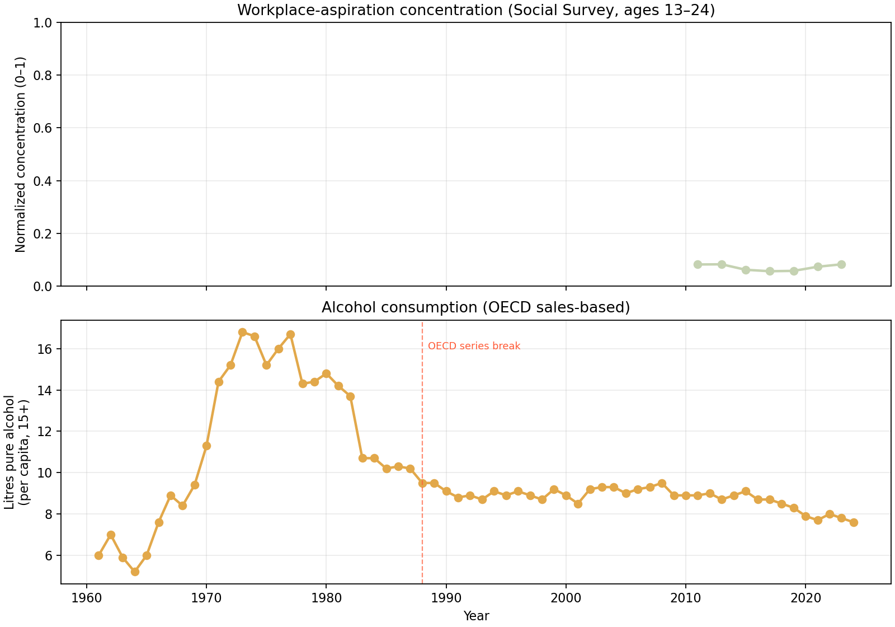
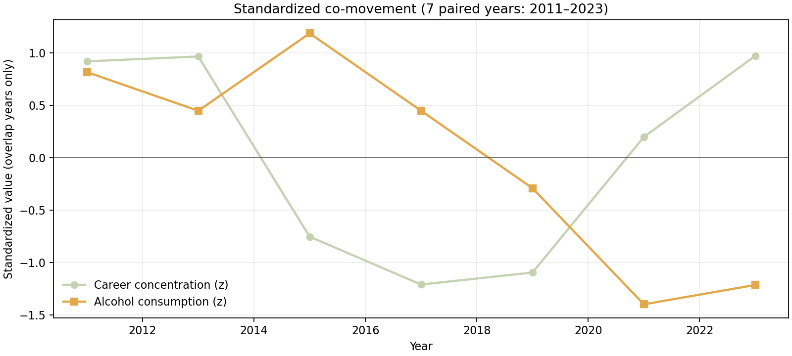
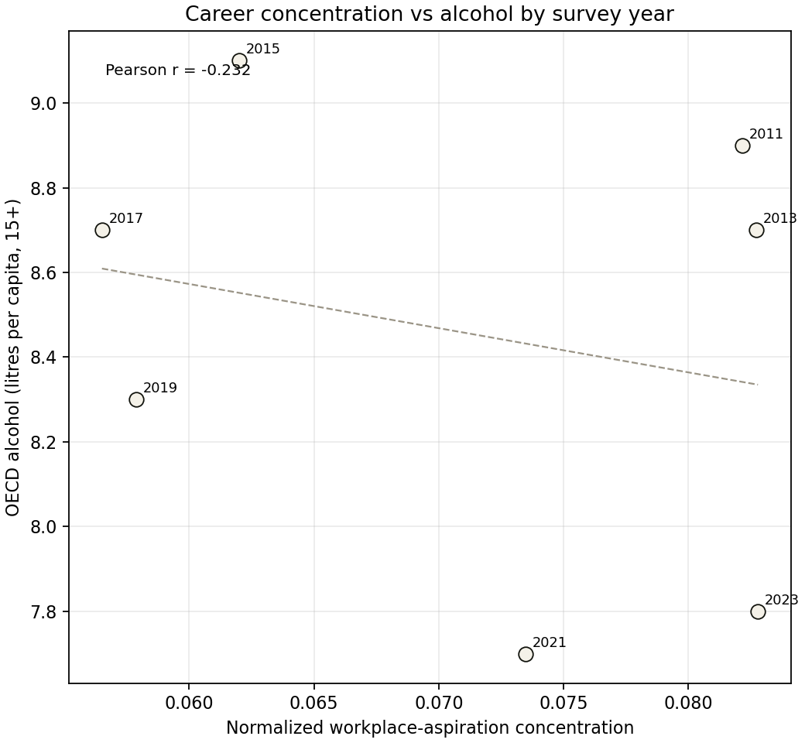

Workplace aspirations and alcohol in South Korea
Exploratory pairing of Statistics Korea Social Survey “preferred workplace” shares (ages 13–24, biennial 2011–2023) with OECD sales-based alcohol consumption (ages 15+). Concentration is normalized HHI over ten fixed workplace categories. This is not a causal claim.
Paired years
7
Survey waves
2011–2023
Pearson r
−0.23
Spearman ρ
−0.20



Reproduce
Raw inputs live in raw/. Run pip install -r requirements.txt
then python analyze.py to refresh output/ CSVs and PNGs.